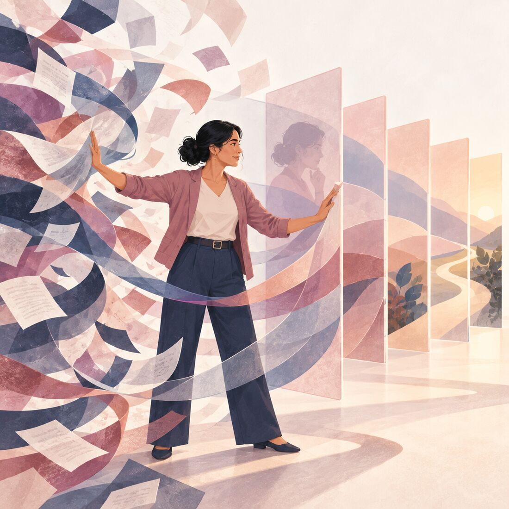
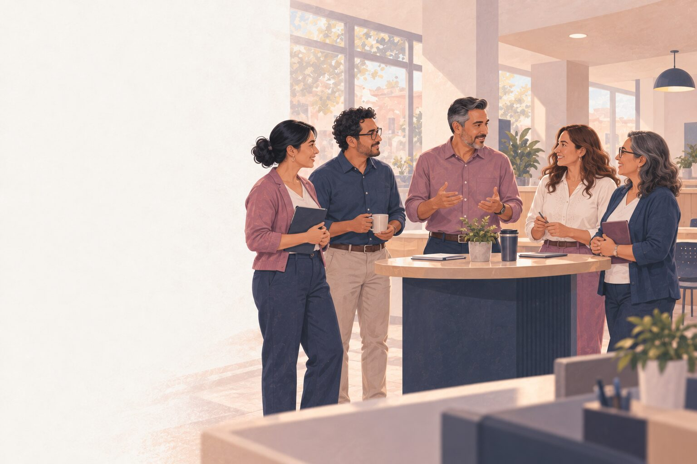
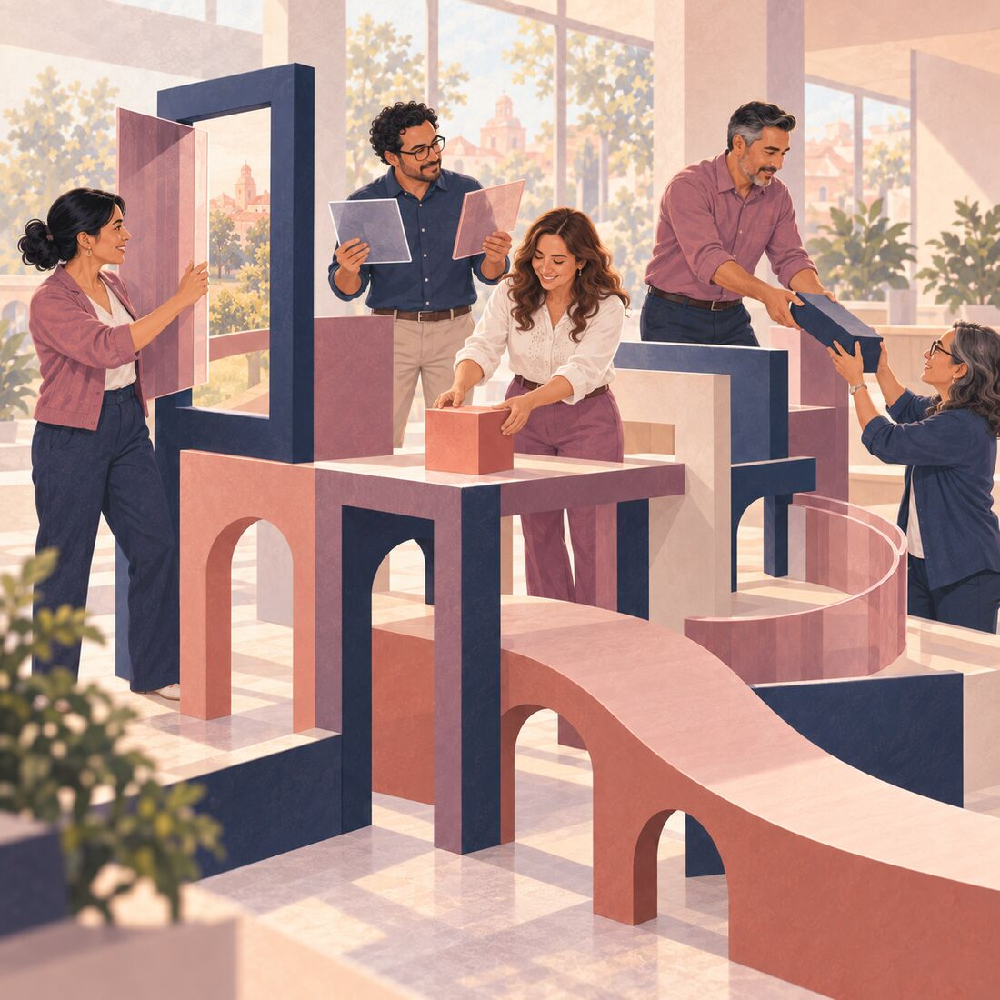
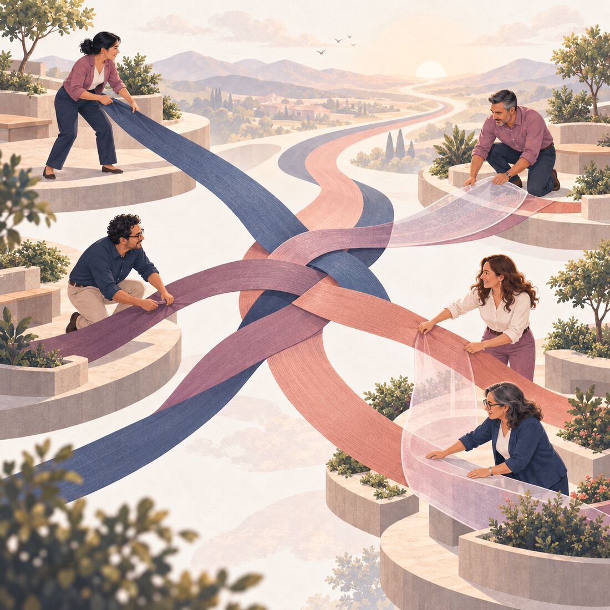
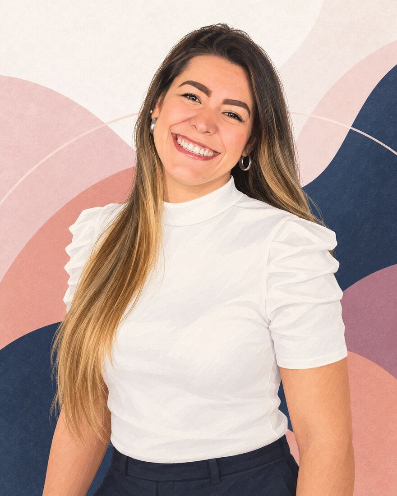

Nivel neurocognitivo
Se entrenan atención, memoria de trabajo, control inhibitorio, flexibilidad, prospectiva, metacognición y regulación emocional.
Mayor claridad y menos reactividad ante presión e incertidumbre.
Liderazgo estratégico para habilitar, decidir y transformar
Para que los líderes de Caja Popular Mexicana decidan con criterio, den autonomía a sus equipos sin perder dirección y movilicen a las áreas hacia objetivos compartidos.

1 de 10
La intervención se orienta a cinco capacidades que fortalecen el liderazgo, la autonomía responsable y la coordinación transversal. Seleccione cada una para conocer su desarrollo y evidencia de logro.
Todo el programa se construye sobre un modelo de liderazgo transformacional, servicial, inspirador y generador de confianza.
2 de 10
La autonomía requiere límites, criterios de decisión, responsabilidad y una lectura consciente del riesgo. Cada tarjeta presenta una tensión habitual y la capacidad que se desarrollará para gestionarla.
La transferencia al trabajo se sostiene mediante práctica, aplicación, evidencia y retroalimentación durante toda la ruta.
Conocer el ciclo de aplicación3 de 10
El programa trabaja de forma integrada los procesos que sostienen una decisión, las conductas que permiten llevarla a la práctica y las relaciones que hacen posible coordinarla dentro de la organización.

Se entrenan atención, memoria de trabajo, control inhibitorio, flexibilidad, prospectiva, metacognición y regulación emocional.
Mayor claridad y menos reactividad ante presión e incertidumbre.

Se entrena preguntar, contrastar supuestos, priorizar, decidir, delegar, argumentar, escuchar y retroalimentar.
Conductas observables que elevan la calidad de ejecución.

Se entrena leer interdependencias, alinear decisiones, gestionar riesgo y coordinar actores.
Autonomía con dirección y colaboración transversal.
4 de 10
Cada mes sus líderes incorporan una capacidad nueva y la aplican con su equipo. Seleccione una estación de la ruta.
5 de 10
La práctica, el seguimiento y la retroalimentación permiten ajustar el proceso durante los siete meses.
Antes de cerrar los casos, ejercicios y énfasis de cada grupo, recogemos información sobre las prioridades institucionales y sobre la manera en que los participantes afrontan los retos vinculados con el programa.
Reunión con el equipo gestor del proyecto para profundizar en los retos, prioridades, tensiones entre áreas y decisiones críticas.
Autodiagnóstico y levantamiento inicial de patrones de decisión, necesidades de desarrollo, intereses y retos de aplicación de los participantes.
La información se integra en un mapa agregado de fortalezas y brechas. A partir de allí se ajustan los casos, las simulaciones, los énfasis de cada grupo, las rutas individuales dentro de la app y la línea base de evaluación. No es una evaluación clínica ni una calificación laboral.
Después de la caracterización, cada mes se repite este ciclo de aprendizaje y aplicación. Seleccione cada etapa.
6 de 10
La arquitectura integra liderazgo transformacional y servicial, autonomía, toma de decisiones, gestión del riesgo, pensamiento estratégico e influencia. Seleccione cada componente para revisar su desarrollo y evidencia.
componentes articulados con una experiencia de aprendizaje y una evidencia asociada
7 de 10
La evaluación combinará línea base, aplicación, productos y observación de conductas para reconocer cambios en la manera de interpretar, decidir, habilitar, comunicar y aprender.
Sabemos desde dónde parte cada líder.
Autodiagnóstico, caracterización de retos y línea base conductual.
Permite definir prioridades, casos, énfasis y rutas individuales.
Vemos el avance y ajustamos a tiempo.
Microretos, bitácora de decisiones, productos aplicados, retroalimentación y observación.
Permite ajustar el acompañamiento e identificar patrones de avance.
Comprobamos qué cambió y qué sigue.
Caso integrador, rúbrica, autoevaluación comparada y plan de sostenibilidad.
Permite identificar logros, brechas y recomendaciones de continuidad.
Al final, CPM recibe un informe ejecutivo con hallazgos agregados, logros observados, oportunidades de desarrollo y recomendaciones. No es una evaluación clínica ni una calificación laboral individual.
8 de 10
$881.500 MXN €43.000
| Concepto | Cálculo | Importe |
|---|---|---|
| Facilitación virtual 21 talleres de 2,5 horas para cada uno de los 4 grupos. | 21 × 2,5 h × 4 grupos = 210 h | $645.750 MXN€31.500 |
| Facilitación presencial, tarifa ajustada CPM 2 laboratorios de 6 horas para cada uno de los 4 grupos. | 2 × 6 h × 4 grupos = 48 h | $147.600 MXN€7.200 |
| Consultoría, personalización y acompañamiento Adecuación entre sesiones, ajustes de la experiencia, seguimiento de evidencias y retroalimentación. | 5 h al mes × 7 meses | $71.750 MXN€3.500 |
| Caracterización inicial Lectura organizacional, lectura de los participantes, integración de hallazgos y personalización de la ruta para los cuatro grupos. | 8 h totales | $16.400 MXN€800 |
| Honorarios profesionales | 301 horas de intervención profesional | $881.500 MXN€43.000 |
Los importes acordados en euros se mantienen fijos durante los 15 días naturales siguientes a la presentación de la propuesta. Su equivalencia en pesos mexicanos se calculó con un tipo de cambio de €1 = $20,50 MXN al 29 de septiembre de 2026. Los honorarios profesionales están exentos de IVA conforme a la normativa española aplicable a este tipo de actividad.
$98.810 MXN €4.820
Viáticos: $92.250 MXN€4.500Incluyen los dos viajes a León, México: tiquetes aéreos, traslados terrestres, hospedaje y alimentación durante cinco días en cada viaje.
Cargos administrativos: $6.560 MXN€320Corresponden a ocho transferencias internacionales de €40 cada una.
Inversión total del proyecto
$980.310 MXN €47.820
Honorarios profesionales, viáticos y gastos administrativos incluidos.
Forma de pago
| Ecosistema digital de aprendizaje, aplicación y evaluación diagnóstica Incluye el autodiagnóstico inicial, la personalización de las rutas, microcontenidos, recordatorios, bitácora de decisiones, carga de evidencias, autoobservación y seguimiento durante 7 meses para 100 líderes. | $143.500 MXN€7.000 |
| Diseño y materiales para los dos laboratorios presenciales de los cuatro grupos, con cobertura para 100 participantes. | $61.500 MXN€3.000 |
| Ajuste especial de tarifa presencial para CPM Tarifa estándar: $4.100 MXN/h (€200/h). Tarifa aplicada: $3.075 MXN/h (€150/h). En las 48 horas presenciales, el valor pasa de $196.800 MXN a $147.600 MXN. | $49.200 MXN€2.400 de beneficio |
| Total valor agregado | $253.700 MXN≈ €12.400 |
Montos de referencia si estos componentes se contrataran por separado.
9 de 10

Neuropsicoeducadora, consultora empresarial y coach ontológica
Especialista en convertir conocimientos sobre atención, flexibilidad cognitiva, regulación emocional, metacognición y aprendizaje en experiencias aplicadas para líderes que deben decidir, habilitar equipos y movilizar resultados. Su trabajo integra la comprensión del funcionamiento humano con la lectura del negocio y el acompañamiento de la transferencia al puesto de trabajo.
Diseño y facilitación de rutas de liderazgo, formación de formadores, comunicación, ventas relacionales y desarrollo de capacidades para gerentes, equipos comerciales y organizaciones de los sectores financiero y cooperativo, farmacéutico, retail y educación corporativa.
Formación en neuroeducación, neuroliderazgo, neuropsicoeducación y psicología positiva, aplicada con rigor pedagógico y sin neuromitos. La neurociencia orienta el diseño de la práctica; el contexto empresarial determina su aplicación.
Licenciada en Ciencias Pedagógicas, especialista en Entornos Virtuales de Aprendizaje, coach ontológica y trainer certificada en LEGO® Serious Play®. Formación complementaria en storytelling y procesos creativos.
Combina aprendizaje experiencial, práctica deliberada, reflexión, aplicación a retos reales, microlearning, coaching y seguimiento de evidencias. Diseña experiencias virtuales y presenciales orientadas a cambios observables.
Una formación solo conceptual aumenta el vocabulario sin cambiar la conducta. Una solo motivacional genera energía sin criterio. Esta propuesta une comprensión, práctica y aplicación al negocio.
10 de 10